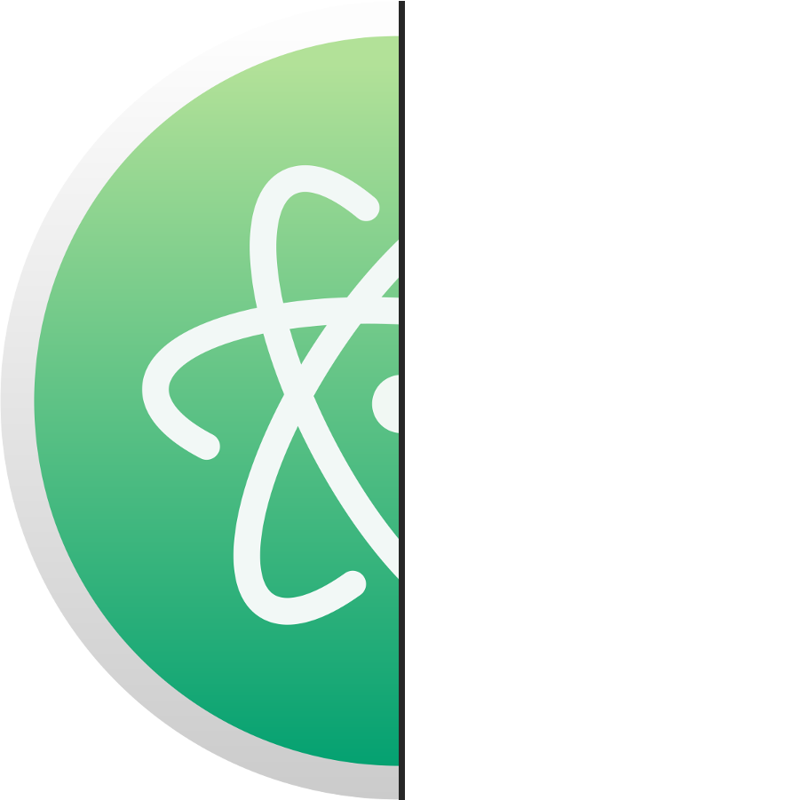
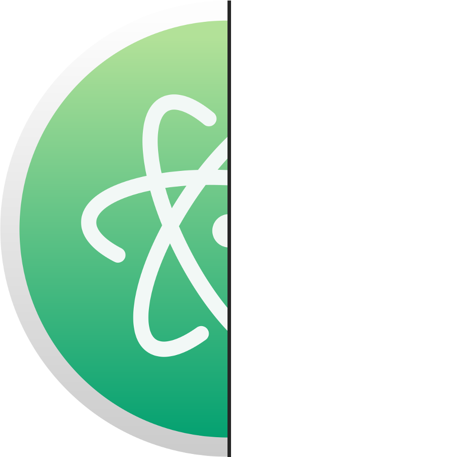
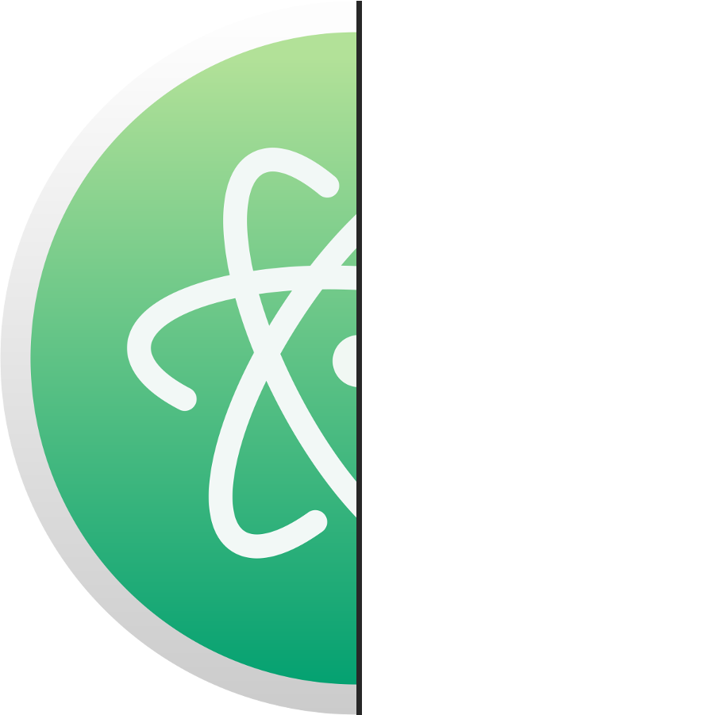
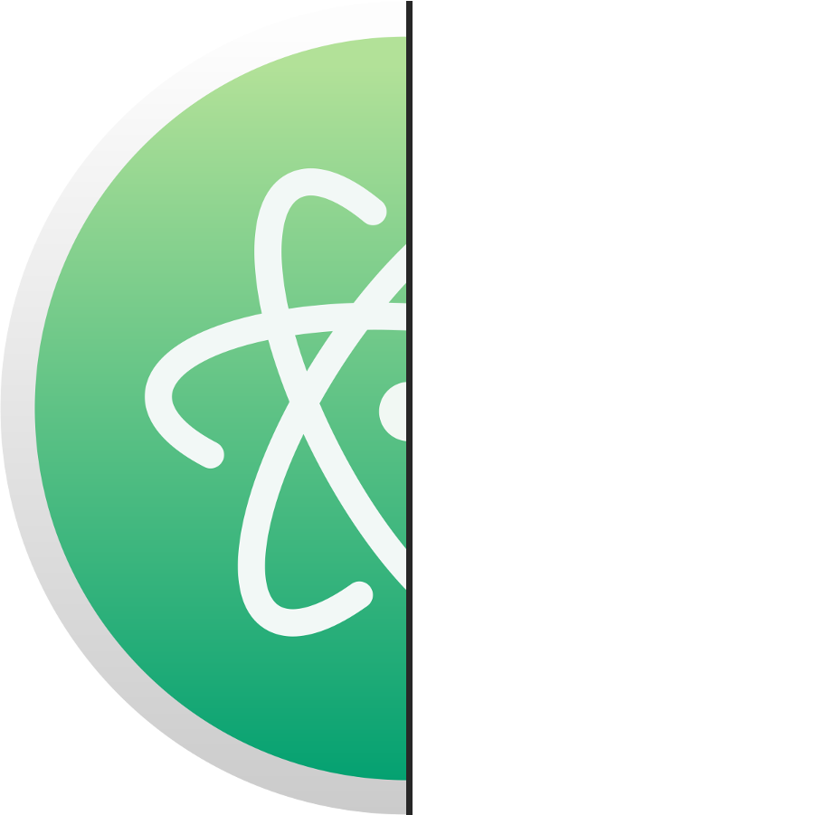

def function_name():
variable = 1
variable += 1
if variable == 2:
return variable
else:
return "not equal 2"
print(function_name())
Python is an interpreted, high-level, general-purpose programming language. Rather than having all of its functionality built into its core, Python was designed to be highly extensible.
Python core philosophy:
Atom is a free, open-source text/source code editor and has been build as an desktop application using web technologies.
Few supported languages:
Firstly we need to install package which will implement cmd to the Atom